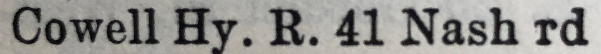

Frank Arthur James Tutt 1920 - 1996
[ Home ] | [ Calendar ] | [ Surnames Index ] | [ Family History ]A newsvendor and the 5th of 7 children of Edmund Tutt (a bricklayer's laborer) and Rose Butler (a laundress)Frank Tutt, the second cousin once-removed on the father's side of Nigel Horne, was born in St Lawrence, Thanet, Kent, England on Sep 1, 19201,2,3,4 and. He married Valerie Howe (with whom he had 3 surviving children Valerie F, Linda J and Frank) in Thanet, Kent, England around Aug 19476.
Frank spent all of his life in Kent, England. Throughout his life, he lived in several places around the county: at Grosvenor Road, St Lawrence in Thanet on Jun 19, 19211; at 20 Grosvenor Road, Ramsgate on Sep 29, 19392; and at 128 Southwood Road, Ramsgate in 19538, in 195511, in 196310, in 19657 and in 19749.
He died on Jun 10, 1996 in Thanet4,5.
Parents
- Edmund Thomas was born on Jun 9, 1882
- Rose was born on Feb 29, 1884
Citations
- 1921 Census Of England & Wales - Findmypast (was age - and the son of the head of the household)
- 1939 Register - Findmypast (was the son of the head of the household)
- England & Wales births 1837-2006 - Findmypast
- England & Wales deaths 1837-2007 - Findmypast
- England & Wales Government Probate Death Index 1858-2019 - Findmypast
- England & Wales Marriages 1837-2005 - Findmypast
- 1965 Kelly's Thanet Directory
- 1953 Kelly's Thanet Directory
- 1974 Kelly's Thanet Directory
- 1963 Kelly's Thanet Directory
- 1955 Kelly's Thanet Directory
Media
1955 Kelly's Thanet Directory

1965 Kelly's Thanet Directory

1974 Kelly's Thanet Directory

1953 Kelly's Thanet Directory

England & Wales deaths 1837-2007 - BMD/D/1996/6/81677871
England & Wales births 1837-2006 - BMD/B/1920/4/AZ/001490/059
England & Wales marriages 1837-2005 - BMD/M/1947/3/PZ/000450/108
England & Wales Government Probate Death Index 1858-2019 - GBOR/GOVPROBATE/B/1996-1998/00133709
Family Tree

Generated by ged2site. Last updated on Nov 13, 2024